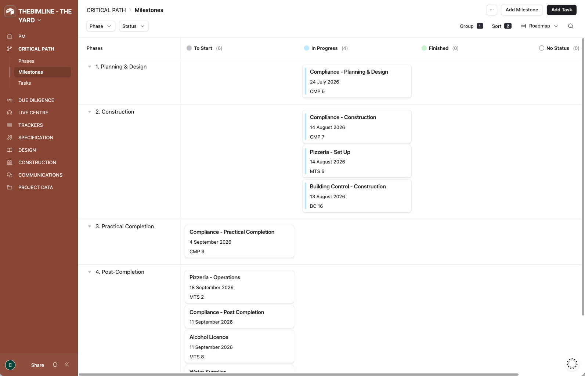
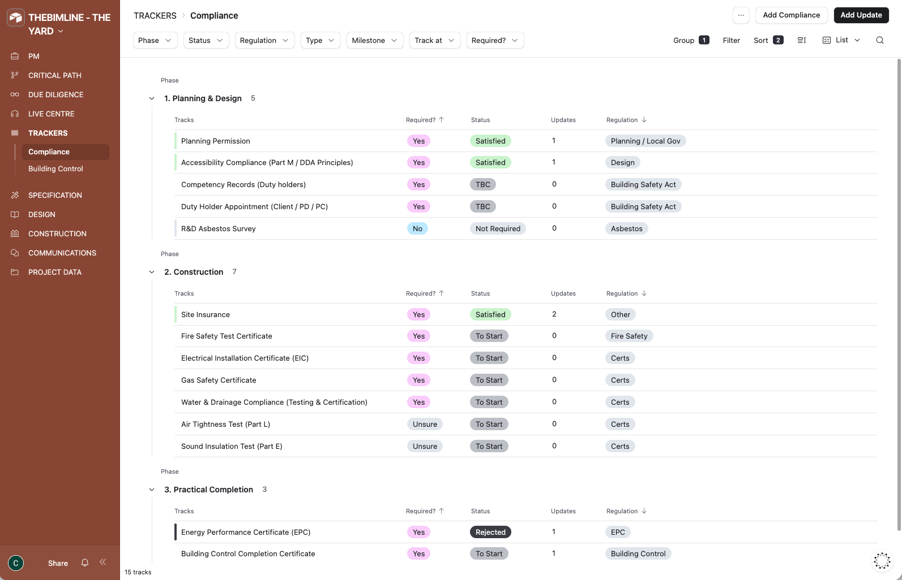
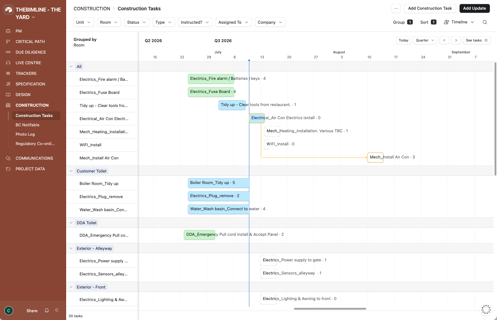
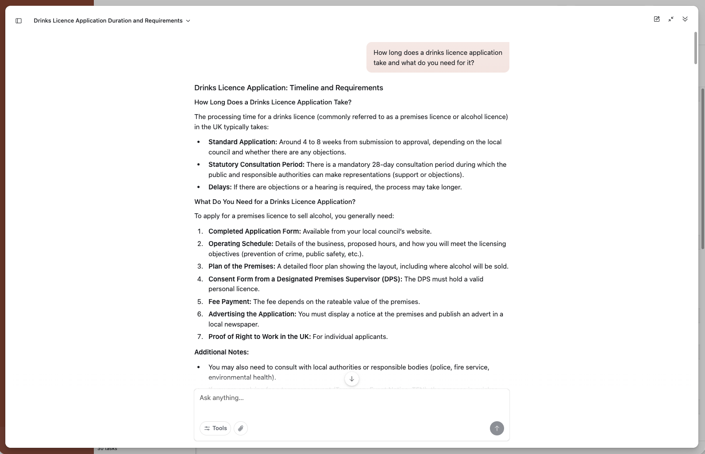
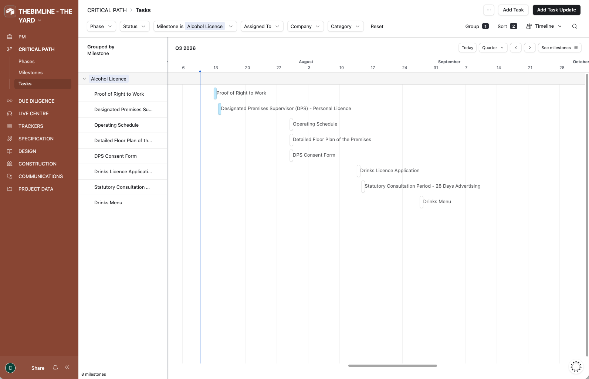
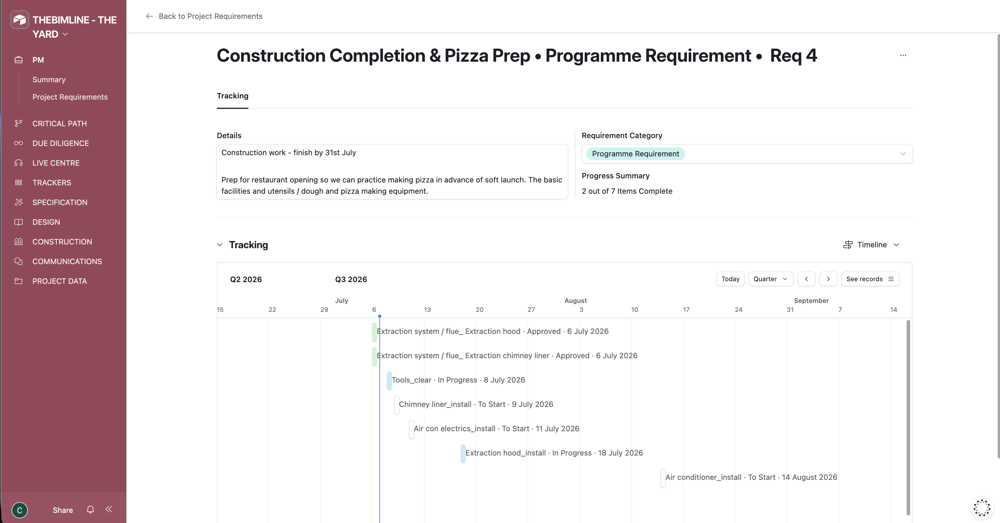
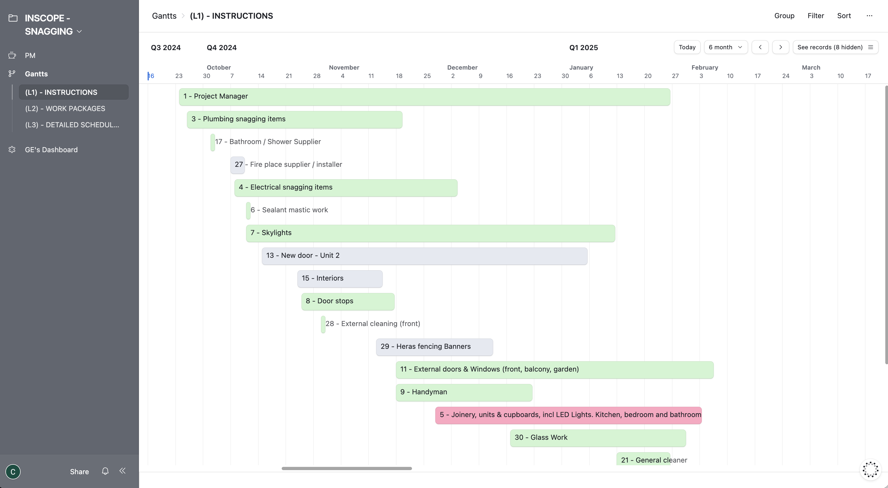
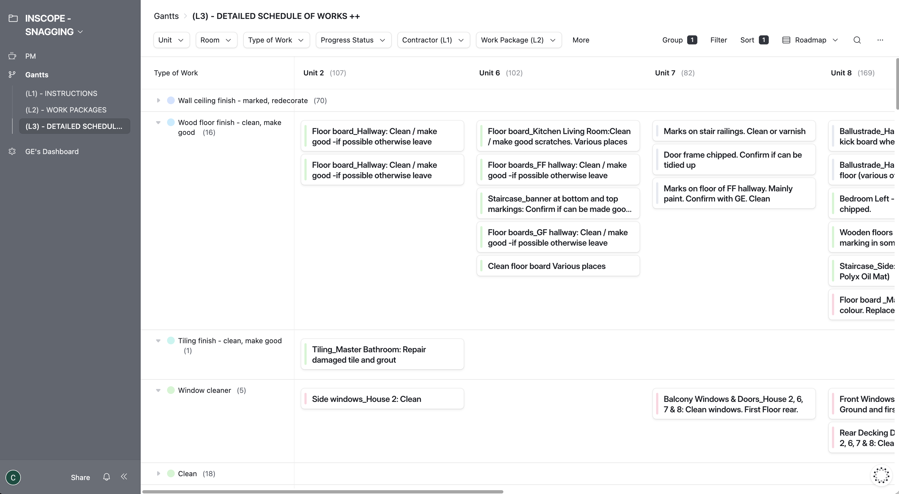
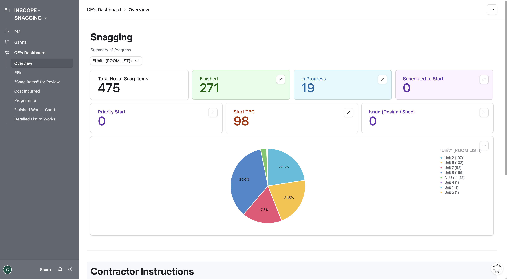
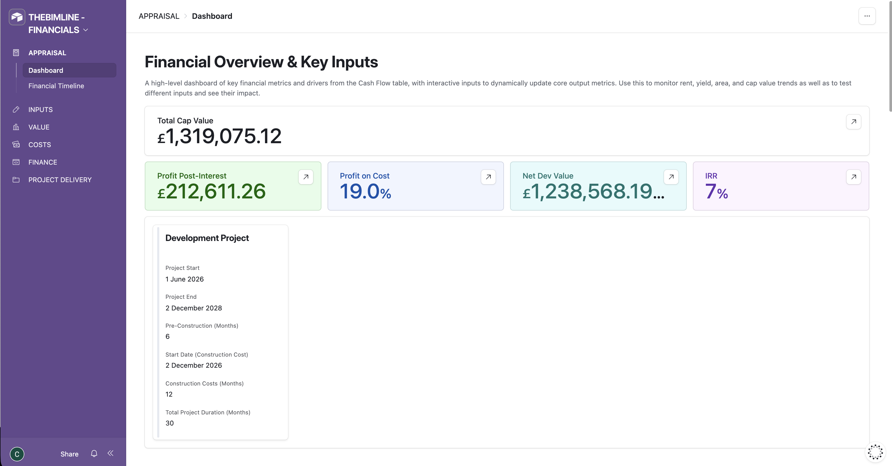

Case Study 01
From site notes to project structure.
Restaurant fit-out final phase
Before

After





Easy to see. Ready to assign, schedule and track progress.
Better • Information • Management
Project management that understands your why.
Transform how you manage projects.
Many projects suffer from an information structure problem.
The result is more time spent managing information and less time managing the project.
Case Study 01
Restaurant fit-out final phase
Before
After





Easy to see. Ready to assign, schedule and track progress.
Success is planned and managed.
The Information Worksite is the answer to the information structure problem. A platform designed specifically for the planning and management of property development projects. The aim is simple: make projects clearer and easier to manage.
Work smarter
Move away from scattered spreadsheets and disconnected files into a clearer project environment that is easier to use.
Stay on top
Cover all key aspects of the project, from costs and risks to tasks and compliance, so nothing slips through the cracks.
Project intelligence
When project information is viewed side by side, it becomes easier to see what is missing, understand the consequences and take action.
Highly organised projects where information supports management, control and project success.
Project Requirements.

The challenge is not eliminating complexity. It is managing complexity in the simplest workable way.
No two projects or teams are the same. InScope's flexible, modular environment is quick to set up and easy to use. Use a single section or combine several together to suit your project. Developed from real-world experience, InScope gives teams a new place and fresh perspectives to do what they have always done. The Information Worksite.
Internal project management.
External approvals & regulation.
Infrastructure for teams.
AI processing converts documents such as building control plan checks and drawing registers into system records in minutes, saving hours of manual input.
Start with proven project structures and adapt them to suit the needs of your project and team.



Simplicity by default. Control by choice.
Start with the information you already have. A task list, spreadsheet, compliance checklist or project notes. Build over time.
Accessed online on desktop, tablet and mobile. Every project includes guided onboarding to help you get organised and make the most of InScope from day one.
As your project develops, add collaborators and InScope modules to match each stage.


InScope is for project owners, whether a homeowner, business owner, developer or lead professional such as a project manager or architect.
It can be used on projects of any type and size — residential, commercial, hospitality and more — and can be used by teams including consultants and trades.
Pricing is tailored to the size of the project and team, based on the number of users and projects. An initial three-month minimum period and setup fee apply.
Access and editing rights are configured for each project. Typically, internal project team members (e.g. project owners) have full visibility, while external users (e.g. contractors and consultants) see and edit information based on assignment and relevance.
Key record information, including who created a record, when it was created and "Status" Last Modified By and "Status" Last Modified Time fields, is recorded. For details of record-level revision history, see the Terms of Service.
InScope is built on Airtable, a digital operations platform that combines relational databases, automation and application design tools to create custom workflows and operational systems.
Airtable is hosted on Amazon Web Services (AWS) in Europe, with customer data encrypted both in transit and at rest.
Airtable maintains high enterprise-level security and privacy standards, including compliance with SOC 2 Type 2, ISO 27001 and ISO 27701 certifications.
All project data remains the property of the user. See the Terms of Service for further details.
Clients receive a structured CSV export of their project information at project completion.
Following a short handover period, the project environment is closed.
Not necessarily. InScope is designed to work alongside existing tools and processes.
Teams can continue using email, WhatsApp, meetings and specialist software where appropriate. InScope acts as the definitive project record, allowing important project information, updates, decisions and documents to be curated and maintained in one place.
LABS can process supported project documents such as planning decision notices, building control plan checks, drawing registers, specifications, RFIs and meeting minutes.
We’ll respond by email to discuss your project and next steps.